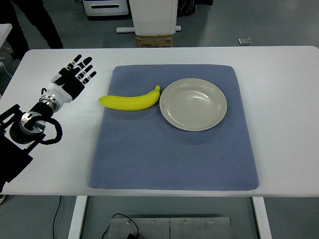

RoboMIND · tienkung_gello_1rgb__place_yellow_banana_on_plastic_plate/1212_141349
Place yellow banana on plastic plate

Annotation
From the dedicated visual review of this video (humanoid_action_v1). Plain text · JSON
Observed outcome
- Status
visually_completed
- Description
The left-edge hand curls its fingers around the banana, lifts it clear of the mat (about frames 354-408), carries it rightward and lowers it into the plate, then opens its fingers (frames 476-486). From about frame 490 through 673 the banana rests on the plate (mostly inside the rim, with its left tip slightly overhanging the plate's left rim at the final frame). The hand withdraws to near its starting pose with fingers open.
Hand roles
- Active visible arm
The left-edge arm reaches the banana with an extended index finger leading, settles the hand over the banana's left/middle section, curls the fingers (thumb at the near/under side) to hold it, lifts and tilts it clear of the mat, carries it rightward to the plate, lowers it onto the plate floor, opens the fingers to release, hovers briefly with the index finger extended and withdraws.
- Other arm
Not visible; its telemetry block (columns 8-15) is constant, so it does not act.
Coordination
Single arm acts alone; no hand-to-hand transfer, second hand or human interaction.
Robot-side evidence
- Visible description
Only one arm is visible: a black upper arm/wrist housing with a white forearm segment and black five-finger dexterous hand, entering from the lower-left/left edge of the overhead image and extending rightward. The body, head and other arm are never visible.
- Telemetry
In puppet/joint_position, columns 0-7 move (column 7, the hand-close channel, drops from 1.0 to about 0.5 at frames ~280-320 and returns to 1.0 at frames ~476-490) while columns 8-15 are constant over all 674 frames. In the earlier Tien Kung episode 1212_105714, the moving block was columns 8-15 and the arm entered from the right edge; here the moving block is columns 0-7 and the arm enters from the left edge. Together this is consistent with a [left, right] block ordering, but the ordering is not documented in the source.
- Image geometry
The camera is the robot's overhead head view looking forward over the table (people and equipment appear at the far side), so image left corresponds to the robot's left; the arm base is at the lower-left.
- Source annotation
Publisher instruction: 'Place yellow banana on plastic plate'. It names no arm.
- Visual certainty
Moderate. The left-arm conclusion rests on head-view geometry plus telemetry-block consistency with the previous episode, not on seeing the torso. The prompt pairs 'left arm' with 'entering from the left edge of the image' so the description holds even if the anatomical label is wrong.
Chronology
| Frames | Observation |
|---|---|
| 0–94 | Hand open and raised at the upper left of the frame, fingers pointing up/up-right, forearm entering from the left edge; only slight drift. Teal banana lies left of the light-blue plate on the brown mat. |
| 96–142 | Arm extends rightward and the hand rotates from pointing up to roughly horizontal, rising slightly toward the top of the mat; banana and plate unchanged. |
| 144–182 | Hand, palm facing down with fingers pointing right, advances along the left side of the mat toward the banana's left end; banana still untouched. |
| 184–214 | Hand descends; the extended index fingertip comes to the banana's left/middle portion (native frames 184, 200, 216 show it just above and touching the banana's left part) while the other fingers stay curled/trailing behind. Banana has not moved. |
| 216–262 | Hand continues down and settles over the banana's left half, fingers placed on its top and thumb tucked at its near side (native 262); small adjustments, banana still on the mat. |
| 264–320 | Fingers wrap onto the banana's left-middle section; hand-close telemetry falls from 1.0 to about 0.59 between roughly frames 280-320 (native 300, 310, 320 show fingers curled over the banana, thumb beneath/near side). Banana still resting on the mat. |
| 322–352 | Closed hand holds the banana in place with slight adjustments; banana not yet raised (native 330, 350). |
| 354–384 | Wrist lifts: the banana's right end rises first and the banana tilts upward in the grip while its left tip is last to leave the mat (native 360-380 at sheet resolution). |
| 386–408 | Banana is clear of the mat and is lifted higher and carried toward the right and the top of the mat in a tilted pose, held by the curled fingers (native 400). |
| 410–438 | Hand carries the banana rightward over the plate's upper-left rim, banana still tilted and held (native 420, 440). |
| 440–474 | Hand lowers the banana into the plate; banana is above and then touching the plate floor while still gripped (native 440, 470). |
| 476–490 | Fingers open (hand telemetry 0.50 to about 1.0 over frames 476-486); banana lies in the plate (native 480-500). |
| 492–516 | Open hand hovers at the banana's left end with the index finger extended, then lifts slightly; banana lies on the plate, no visible further displacement (native 500, 510). |
| 518–552 | Arm withdraws up and left; hand fingers open and pointing right/up, leaving the plate area; banana stays in the plate. |
| 554–600 | Hand swings back to the left edge, fingers pointing up and rotated, returning toward the starting pose; banana still on the plate. |
| 602–673 | Arm static near the starting pose at the upper left, hand open with fingers up; banana rests on the plate (native 673), left tip slightly overhanging the plate's left rim. |
Clip selection
The episode is one continuous single task (grasp the banana, lift, carry, set it on the plate, release, withdraw) with ordinary phases; the complete sequence is retained, so no shortened clip or separate full-sequence prompt was made.
Differences from the publisher annotation
- The publisher instruction calls the object a 'yellow banana' but it appears teal/cyan in every stored frame (possible color-channel swap or a teal toy); the prompt uses the appearance 'teal banana'.
- The instruction says 'plastic plate'; the object is a shallow light blue-grey plate and the material is not verifiable visually. The action (banana ends on the plate) otherwise matches.
Uncertainties
- Robot-relative left/right is inferred (head-view geometry plus telemetry-block ordering), not seen directly; telemetry block ordering is undocumented.
- Exact finger contacts on the banana (which fingers press from above, thumb placement) are not fully resolvable at 640x480; described as curling the fingers around the banana.
- The hand briefly covers the banana during the carry; lift-off is judged from the banana rising and tilting while the hand moves (right end rises first around frames 354-384).
- Whether the banana moves slightly during the post-release hover (frames 492-516) is not distinguishable; its final pose appears unchanged.
- At the final frame the banana's left tip slightly overhangs the plate's left rim in the image; whether it touches the mat beneath is not determinable from the overhead view.
- The banana renders teal/cyan in the stored frames, whereas the publisher names it yellow; the original color cannot be established from the data.
- FPS is not recorded; frame indices are authoritative, not time.
- Telemetry polarity of column 7 (high=open) is inferred from video and used only as supporting evidence.
Complete review record action_review.json
{
"prompt_protocol": "humanoid_action_v1",
"prompt_protocol_note": "humanoid_action_v1 is applied by analogy to a non-Humanoid-Everyday/GR1 humanoid (Tien Kung with dexterous hands). The overhead head view shows only the forearm and hand entering at the left edge; the side is stated together with the image edge so the description is unambiguous.",
"prompt_provenance": "visually_authored_from_video_and_initial_frame",
"dataset": "x-humanoid-robomind/RoboMIND",
"task": "place_yellow_banana_on_plastic_plate",
"episode_id": "1212_141349",
"embodiment": "tienkung_gello_1rgb",
"generation_camera": "camera_top",
"source_video": "../../original/data/trajectory.hdf5",
"source_frame_count": 674,
"source_resolution": [
640,
480
],
"source_fps": null,
"source_fps_note": "FPS is not recorded in the source HDF5; 30 FPS is only a nominal playback rate, so no real-time durations are claimed.",
"selected_source_frame_start": 0,
"selected_source_frame_end_exclusive": 674,
"selected_frame_count": 674,
"selection_reason": "The episode is one continuous single task (grasp the banana, lift, carry, set it on the plate, release, withdraw) with ordinary phases; the complete sequence is retained, so no shortened clip or separate full-sequence prompt was made.",
"usable_prompt": "The humanoid's left arm, entering from the left edge of the image, extends its dexterous hand over the yellow banana, closes its fingers around the banana and lifts it off the table. The hand carries the banana rightward and lowers it into the cream plate, then opens its fingers to release it. The banana rests in the plate as the open hand withdraws up toward the left edge. Keep the camera fixed; preserve robot geometry, physically valid joint motion, and normal gripper opening and closing.",
"full_sequence_prompt": null,
"selected_action_outcome": {
"status": "visually_completed",
"description": "The left-edge hand curls its fingers around the banana, lifts it clear of the mat (about frames 354-408), carries it rightward and lowers it into the plate, then opens its fingers (frames 476-486). From about frame 490 through 673 the banana rests on the plate (mostly inside the rim, with its left tip slightly overhanging the plate's left rim at the final frame). The hand withdraws to near its starting pose with fingers open."
},
"source_overall_outcome": {
"status": "visually_completed",
"source_quality_label": "no per-frame label inspected; the archive path was not used as visual evidence",
"description": "Same as the selected action: banana ends on the plate and the hand returns near its start pose."
},
"anatomical_side_evidence": {
"visible_description": "Only one arm is visible: a black upper arm/wrist housing with a white forearm segment and black five-finger dexterous hand, entering from the lower-left/left edge of the overhead image and extending rightward. The body, head and other arm are never visible.",
"telemetry": "In puppet/joint_position, columns 0-7 move (column 7, the hand-close channel, drops from 1.0 to about 0.5 at frames ~280-320 and returns to 1.0 at frames ~476-490) while columns 8-15 are constant over all 674 frames. In the earlier Tien Kung episode 1212_105714, the moving block was columns 8-15 and the arm entered from the right edge; here the moving block is columns 0-7 and the arm enters from the left edge. Together this is consistent with a [left, right] block ordering, but the ordering is not documented in the source.",
"image_geometry": "The camera is the robot's overhead head view looking forward over the table (people and equipment appear at the far side), so image left corresponds to the robot's left; the arm base is at the lower-left.",
"source_annotation": "Publisher instruction: 'Place yellow banana on plastic plate'. It names no arm.",
"visual_certainty": "Moderate. The left-arm conclusion rests on head-view geometry plus telemetry-block consistency with the previous episode, not on seeing the torso. The prompt pairs 'left arm' with 'entering from the left edge of the image' so the description holds even if the anatomical label is wrong."
},
"arm_roles": {
"active_visible_arm": "The left-edge arm reaches the banana with an extended index finger leading, settles the hand over the banana's left/middle section, curls the fingers (thumb at the near/under side) to hold it, lifts and tilts it clear of the mat, carries it rightward to the plate, lowers it onto the plate floor, opens the fingers to release, hovers briefly with the index finger extended and withdraws.",
"other_arm": "Not visible; its telemetry block (columns 8-15) is constant, so it does not act."
},
"coordination": "Single arm acts alone; no hand-to-hand transfer, second hand or human interaction.",
"chronology": [
{
"source_frames_inclusive": [
0,
94
],
"observation": "Hand open and raised at the upper left of the frame, fingers pointing up/up-right, forearm entering from the left edge; only slight drift. Teal banana lies left of the light-blue plate on the brown mat."
},
{
"source_frames_inclusive": [
96,
142
],
"observation": "Arm extends rightward and the hand rotates from pointing up to roughly horizontal, rising slightly toward the top of the mat; banana and plate unchanged."
},
{
"source_frames_inclusive": [
144,
182
],
"observation": "Hand, palm facing down with fingers pointing right, advances along the left side of the mat toward the banana's left end; banana still untouched."
},
{
"source_frames_inclusive": [
184,
214
],
"observation": "Hand descends; the extended index fingertip comes to the banana's left/middle portion (native frames 184, 200, 216 show it just above and touching the banana's left part) while the other fingers stay curled/trailing behind. Banana has not moved."
},
{
"source_frames_inclusive": [
216,
262
],
"observation": "Hand continues down and settles over the banana's left half, fingers placed on its top and thumb tucked at its near side (native 262); small adjustments, banana still on the mat."
},
{
"source_frames_inclusive": [
264,
320
],
"observation": "Fingers wrap onto the banana's left-middle section; hand-close telemetry falls from 1.0 to about 0.59 between roughly frames 280-320 (native 300, 310, 320 show fingers curled over the banana, thumb beneath/near side). Banana still resting on the mat."
},
{
"source_frames_inclusive": [
322,
352
],
"observation": "Closed hand holds the banana in place with slight adjustments; banana not yet raised (native 330, 350)."
},
{
"source_frames_inclusive": [
354,
384
],
"observation": "Wrist lifts: the banana's right end rises first and the banana tilts upward in the grip while its left tip is last to leave the mat (native 360-380 at sheet resolution)."
},
{
"source_frames_inclusive": [
386,
408
],
"observation": "Banana is clear of the mat and is lifted higher and carried toward the right and the top of the mat in a tilted pose, held by the curled fingers (native 400)."
},
{
"source_frames_inclusive": [
410,
438
],
"observation": "Hand carries the banana rightward over the plate's upper-left rim, banana still tilted and held (native 420, 440)."
},
{
"source_frames_inclusive": [
440,
474
],
"observation": "Hand lowers the banana into the plate; banana is above and then touching the plate floor while still gripped (native 440, 470)."
},
{
"source_frames_inclusive": [
476,
490
],
"observation": "Fingers open (hand telemetry 0.50 to about 1.0 over frames 476-486); banana lies in the plate (native 480-500)."
},
{
"source_frames_inclusive": [
492,
516
],
"observation": "Open hand hovers at the banana's left end with the index finger extended, then lifts slightly; banana lies on the plate, no visible further displacement (native 500, 510)."
},
{
"source_frames_inclusive": [
518,
552
],
"observation": "Arm withdraws up and left; hand fingers open and pointing right/up, leaving the plate area; banana stays in the plate."
},
{
"source_frames_inclusive": [
554,
600
],
"observation": "Hand swings back to the left edge, fingers pointing up and rotated, returning toward the starting pose; banana still on the plate."
},
{
"source_frames_inclusive": [
602,
673
],
"observation": "Arm static near the starting pose at the upper left, hand open with fingers up; banana rests on the plate (native 673), left tip slightly overhanging the plate's left rim."
}
],
"uncertainties": [
"Robot-relative left/right is inferred (head-view geometry plus telemetry-block ordering), not seen directly; telemetry block ordering is undocumented.",
"Exact finger contacts on the banana (which fingers press from above, thumb placement) are not fully resolvable at 640x480; described as curling the fingers around the banana.",
"The hand briefly covers the banana during the carry; lift-off is judged from the banana rising and tilting while the hand moves (right end rises first around frames 354-384).",
"Whether the banana moves slightly during the post-release hover (frames 492-516) is not distinguishable; its final pose appears unchanged.",
"At the final frame the banana's left tip slightly overhangs the plate's left rim in the image; whether it touches the mat beneath is not determinable from the overhead view.",
"The banana renders teal/cyan in the stored frames, whereas the publisher names it yellow; the original color cannot be established from the data.",
"FPS is not recorded; frame indices are authoritative, not time.",
"Telemetry polarity of column 7 (high=open) is inferred from video and used only as supporting evidence."
],
"source_annotation_discrepancies": [
"The publisher instruction calls the object a 'yellow banana' but it appears teal/cyan in every stored frame (possible color-channel swap or a teal toy); the prompt uses the appearance 'teal banana'.",
"The instruction says 'plastic plate'; the object is a shallow light blue-grey plate and the material is not verifiable visually. The action (banana ends on the plate) otherwise matches."
],
"inspection_coverage": {
"entire_sequence_reviewed": true,
"sampled_decoded_frame_indices": [
0,
2,
4,
6,
8,
10,
12,
14,
16,
18,
20,
22,
24,
26,
28,
30,
32,
34,
36,
38,
40,
42,
44,
46,
48,
50,
52,
54,
56,
58,
60,
62,
64,
66,
68,
70,
72,
74,
76,
78,
80,
82,
84,
86,
88,
90,
92,
94,
96,
98,
100,
102,
104,
106,
108,
110,
112,
114,
116,
118,
120,
122,
124,
126,
128,
130,
132,
134,
136,
138,
140,
142,
144,
146,
148,
150,
152,
154,
156,
158,
160,
162,
164,
166,
168,
170,
172,
174,
176,
178,
180,
182,
184,
186,
188,
190,
192,
194,
196,
198,
200,
202,
204,
206,
208,
210,
212,
214,
216,
218,
220,
222,
224,
226,
228,
230,
232,
234,
236,
238,
240,
242,
244,
246,
248,
250,
252,
254,
256,
258,
260,
262,
264,
266,
268,
270,
272,
274,
276,
278,
280,
282,
284,
286,
288,
290,
292,
294,
296,
298,
300,
302,
304,
306,
308,
310,
312,
314,
316,
318,
320,
322,
324,
326,
328,
330,
332,
334,
336,
338,
340,
342,
344,
346,
348,
350,
352,
354,
356,
358,
360,
362,
364,
366,
368,
370,
372,
374,
376,
378,
380,
382,
384,
386,
388,
390,
392,
394,
396,
398,
400,
402,
404,
406,
408,
410,
412,
414,
416,
418,
420,
422,
424,
426,
428,
430,
432,
434,
436,
438,
440,
442,
444,
446,
448,
450,
452,
454,
456,
458,
460,
462,
464,
466,
468,
470,
472,
474,
476,
478,
480,
482,
484,
486,
488,
490,
492,
494,
496,
498,
500,
502,
504,
506,
508,
510,
512,
514,
516,
518,
520,
522,
524,
526,
528,
530,
532,
534,
536,
538,
540,
542,
544,
546,
548,
550,
552,
554,
556,
558,
560,
562,
564,
566,
568,
570,
572,
574,
576,
578,
580,
582,
584,
586,
588,
590,
592,
594,
596,
598,
600,
602,
604,
606,
608,
610,
612,
614,
616,
618,
620,
622,
624,
626,
628,
630,
632,
634,
636,
638,
640,
642,
644,
646,
648,
650,
652,
654,
656,
658,
660,
662,
664,
666,
668,
670,
672
],
"sampling_method": "Every second decoded stored frame of camera_top (0-672) in sequential 4x3 temporary contact sheets covering the complete 674-frame source, plus native-resolution pairs at the transitions (frame 673 included).",
"native_resolution_frame_indices": [
0,
184,
216,
262,
300,
310,
320,
350,
360,
400,
420,
440,
470,
500,
510,
530,
673
],
"conditioning_png_inspected_after_sequence": true,
"conditioning_png": "../first_frame.png",
"temporary_evidence_location": "/tmp/rv_review/robomind_1212_141349 (not a dataset artifact)",
"ancillary_camera_videos_used": false,
"frames_decoded_from": "observations/rgb_images/camera_top JPEG frames in trajectory.hdf5",
"telemetry_used": "puppet joint_position (16-dim) per-column variation and frame values, as supporting evidence only."
},
"evidence_frame_indices": [
0,
184,
216,
262,
300,
320,
360,
400,
440,
470,
500,
530,
673
],
"review_completed_at": "2026-10-15T20:06:45Z",
"dedicated_review_agent": "review_robomind_1212_141349",
"prompt_color_correction": {
"changes": [
"'the teal banana' -> 'the yellow banana'",
"'the light-blue plate' -> 'the cream plate'"
],
"previous_prompt": "The humanoid's left arm, entering from the left edge of the image, extends its dexterous hand over the teal banana, closes its fingers around the banana and lifts it off the table. The hand carries the banana rightward and lowers it into the light-blue plate, then opens its fingers to release it. The banana rests in the plate as the open hand withdraws up toward the left edge. Keep the camera fixed; preserve robot geometry, physically valid joint motion, and normal gripper opening and closing.",
"corrected_at": "2026-10-15T20:09:55.205517+00:00",
"basis": "Colour terms re-read from the channel-corrected first frame and video; no other wording changed."
},
"channel_order_note": "Channel-order correction (2026-10-15): RoboMIND stores Tien Kung JPEGs with red and blue swapped relative to a standard decoder; this review was made on uncorrected frames, so colour terms in its observations are swapped (teal/cyan reads as yellow or yellow-green, blue as orange/brown, brown/pink as blue). Actions, timing and outcomes are unaffected. All decoded derivatives are now corrected.",
"generation_reference_validation": {
"source_frame_start": 0,
"source_frame_end_exclusive": 674,
"frame_count": 674,
"lossless_source_frame_correspondence_passed": true,
"original_source_hdf5_retained_unchanged": true
}
}